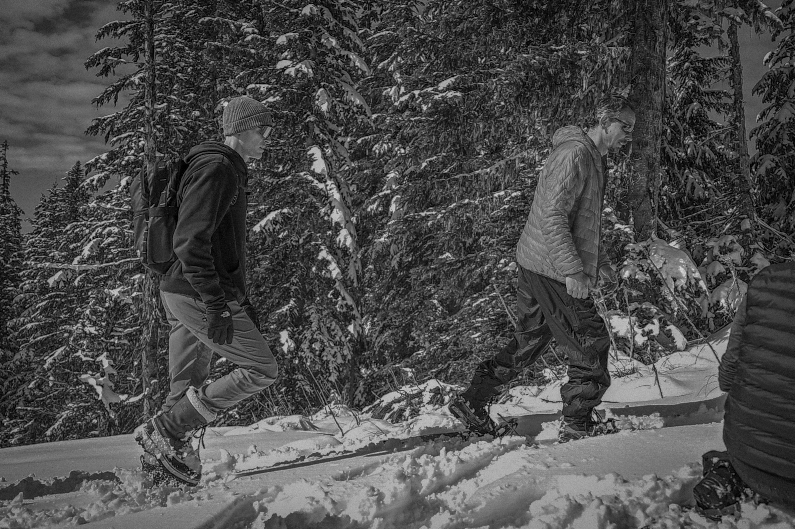
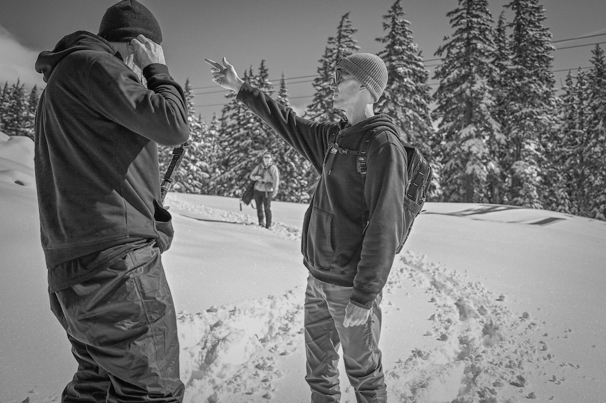
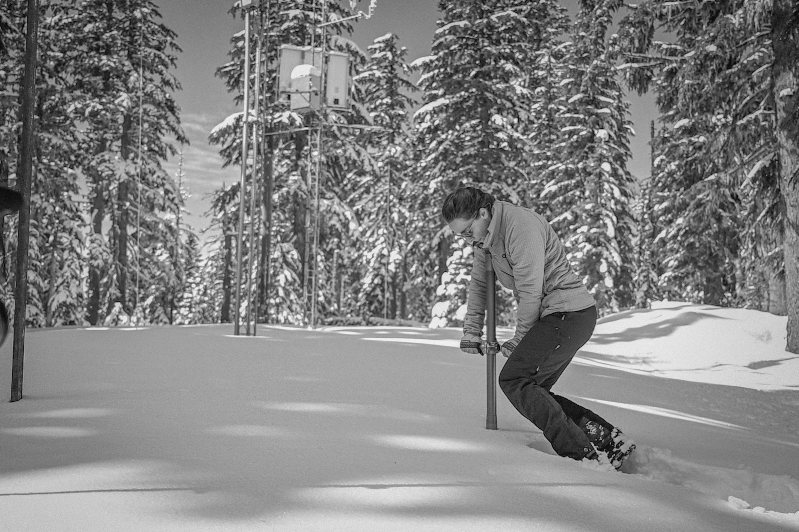
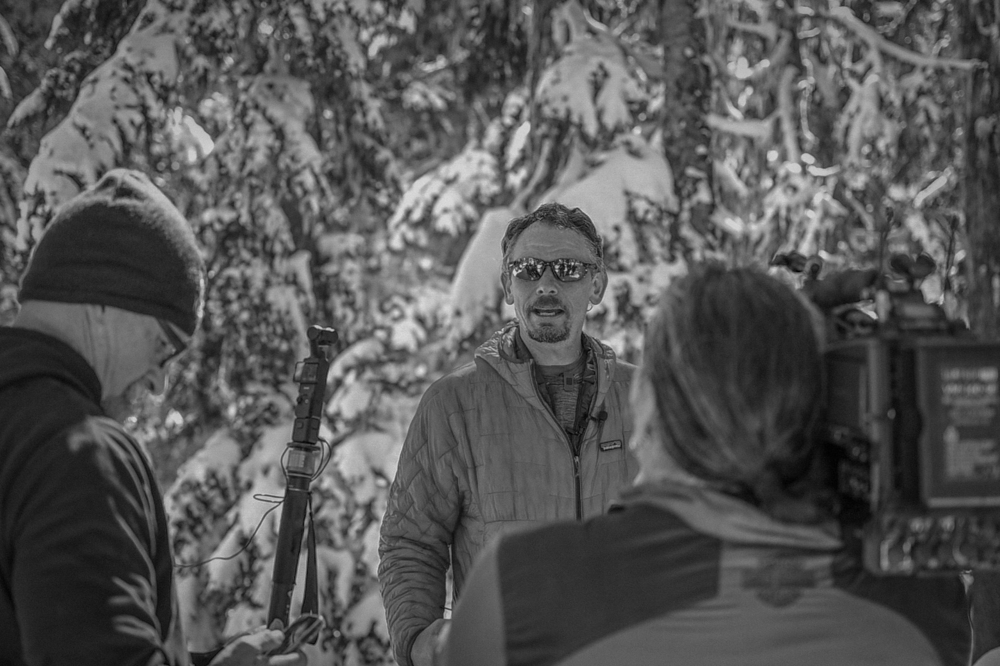
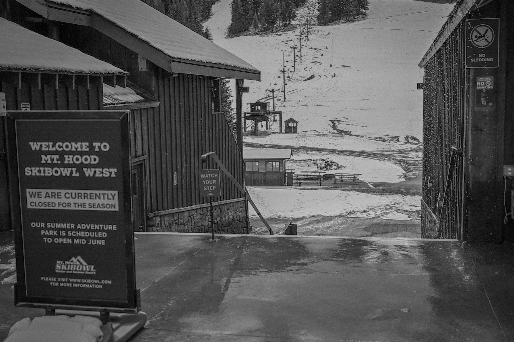

At 10 a.m. on a bluebird day, a group of local news reporters struggled to secure their boots to borrowed snowshoes at a pull-off on the road up to Timberline Lodge.
Three student reporters who had driven up from Eugene that morning adjusted their straps and ensured their equipment—pen and pad as well as a film camera if you can believe it—were ready for a snowy walk.
"Does anyone know how long of a walk it is?" one of them asked. I checked an email which stated "...the SNOTEL site is a 10 minute walk from the parking area," and relayed the information.
A Sprinter Van with a long line of cars behind it drove by, the driver holding a thumbs-down to cars driving up to the ski resort.
We gathered around the only people there who looked like they knew what they were doing. Among them was Matt Warbritton, a hydrologist with the USDA-NRCS. He gave instructions which included avoiding incoming skiers as we crossed the piste.
The SNOTEL site, he told us, was located on the other side of the Pucci ski lift. We then followed Meghan Ciupak, another hydrologist, who would lead us to the station.
The group began trudging through the snow toward the tree line. Warbritton told me, "We haven't done a media day since 2019, I think. Should be fun." Someone lost a snowshoe almost as soon as we began.
Larry O'Neill, the state climatologist, had invited me to this event the day before. "We were supposed to do this two days ago," he told me, "but we postponed it because of the weather."
He was referring to yesterday's snow storm which dropped 10 inches on the mountain. The event—a routine ground-truthing dubbed "media day"—was organized because of an uptick in requests from local news.
April 1st saw the worst snowpack in the state's history. "It's a historic year," he said. "We wanted to make sure it was documented."
We walked across undisturbed snow. Ciupak led us through some trees to a drop-off. She paced back and forth at the edge looking for a way down. The exasperated camera crew took the moment to catch their breath.
We ended up having to leave the trees to look for another way across the canyon. "In a normal year, the snowpack would be enough that we could easily have crossed there," Warbritton said.
By the time we made it to the SNOTEL station, we were delayering. The recently-accumulated snow was dripping from the canopy. Once we were all gathered, a ski patrol snow machine pulled up with one of the film crew on the back. He was still catching his breath when he joined us. "Should've brought my inhaler," he said.
Ciupak laid out a black canvas bag onto the snow. She began removing and assembling long steel tubes. Warbritton stood beside her explaining the protocol.
Meghan Ciupak, a hydrologist, forces a tube into the snowpack to measure SWE.
"The station is automated, so we don't need to come up here all that much," he said. "But we'll still come up occasionally to ground-truth the data that comes in."
Ciupak ensured the camera crew was ready before sticking the tube forcefully through the snow. It caught. Ciupak let out a big "oh no," and one of the crew behind me said "sound bite captured."
She put her body-weight above the tube and forced it down further. "We need to touch the dirt," Warbritton said aloud. She pulled the tube from the snow and checked the bottom.
"Alright," Warbritton said, "we'll have to try that one more time." The camera crew didn't seem to mind.
The next time Ciupak pulled the tube from the snow, it had a small layer of soil at the bottom which Warbritton carefully cleaned out. Ciupak said a series of measurements aloud while Warbritton recorded them in a notebook.
He then pulled out his phone and made some calculations. "SWE," he said, "stands for snow water equivalent. It's just a measure of the water content in the snowpack."
"We're at 43% of normal," he reported out still looking at his phone. "Pretty historic. This is extraordinarily concerning. What you're standing on is historically low snowpack."
From the back of the crowd O'Neill said, "and this is the best in the state!" with a nervous smile. It's true—the rest of the state has fared much worse than Mt. Hood.
Warbritton continued as the camera crew rolled. He explained all the downstream effects of a low snowpack heading into the spring. Among them was the economic impact to local ski resorts.
Later, I chatted with Jo, a manager from one of those ski resorts who only gave me his first name. He grew up on the mountain and said he'd never seen it so bad.
"We'd see great snow and then it would melt really quickly. It'd often be just grass out there," he said pointing behind him to the main run. The lifts where he worked were only open for 22 days.
Water drips from the roof at Skibowl on Mt Hood on April 3rd, 2026.
"To be honest," he said, "I had a great year. You should've seen yesterday. Gotta be one of the best snow days I've ever had. And there was no one up here."
Jo told me that he thinks more people could have come up to enjoy the good days. "There were plenty of them," according to him. But, he explained, the news was highlighting the lack of snow.
He shrugged and said that that just meant quicker lines for him. "I'm just worried about the fire season," he told me.
Both O'Neill and Warbritton agreed that a historically weak snowpack can set the stage for a severe wildfire season. But it isn't an inevitability. Wildfire risk can be mitigated by summer rain events.
Though it hardly matters, O'Neill told me, when a late season wind event occurs. "If the landscape is dry, and you have an east wind event that's really warm and dry—like the Labor Day 2020 wildfires—all bets are off."
Water will be scarce throughout Oregon in the coming months. O'Neill described this year as a litmus test for the adaptation efforts that we've put in place over the last decade.
"We've been through extensive drought periods between 2020 and 2023," he told me. "We are now more practiced at drought." Among the efforts are greater funding for wildfire resilience and piped irrigation canals.
Ultimately, this year's water situation is not the worst-case scenario. Reservoirs around the state have ample reserves from a series of decent water years. Still, the effects will be deeply felt, both on economic and ecological dimensions.
"By the end of April, we'll probably start seeing near record-low stream flows. And without any boost of precipitation during the spring, we'll probably see stream flows get to August or September levels in late May or early June," said O'Neill.
I asked him about the chance that we will enter into the warm phase of ENSO—known colloquially as an El Niño—in the coming months. It is looking increasingly likely, with a 72% - 80% chance of an El Niño developing this summer.
We commonly think of an El Niño as bringing warmer and drier conditions to Oregon. But that's not true for the strongest El Niños which counterintuitively bring wetter conditions.
Larry O'Neill talks with camera crews during Media Day on Mt Hood.
"We'll be going into next year with empty reservoirs and the need for a really wet season to restore our landscape moisture and water supply," O'Neill said.
"If we get a very strong El Niño, great. But if it's weak or moderate, we could end up with a really dry winter on top of what we have now."
He explained that multiple winters like the one we just experienced could compound into a much worse situation. "The impacts cascade and it becomes a major disaster—for our economy, our ecology, the landscape, and for wildfires."
Before heading home, I stopped in at the Mt Hood Brewing Co. in Government Camp. "Pretty slow," I said to the bartender. "Been a slow year," she said back.
George and his brother Mike, who both live in Portland, were seated at the bar next to me. They'd just spent the day skiing at Timberline.
"How was it?" I asked. "Warm," George said in a thick Romanian accent.
He asked what I was doing up there. I told him that I was writing a story about the snow. He laughed. "Not much to write about."




